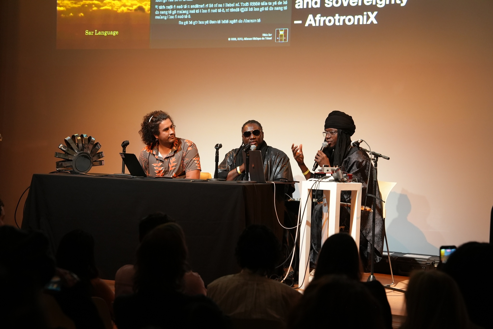
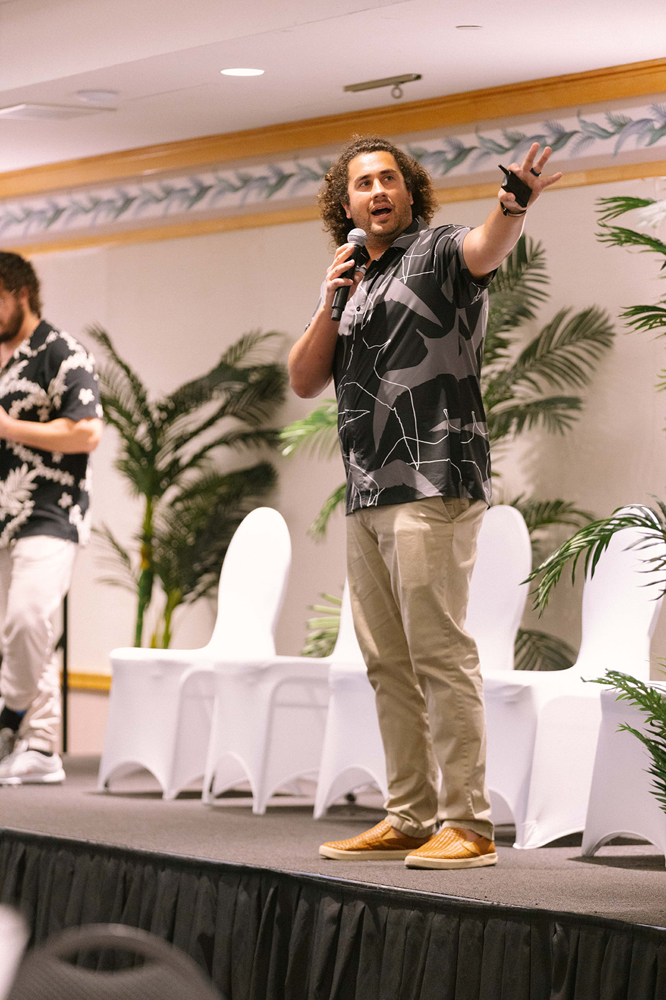

Public Scholarship
Writing, Art, and Provocation
Op-eds, essays, keynotes, and artistic collaborations that sit outside the formal publication record — where sustainable computing meets culture and community.
Art & Provocation
Machine Unlearning Through Small Language Models
Rather than handing data and language over to platforms, we envisioned small models as tools for preservation and rehearsal of our respective languages — "a machine that does not know English, it does not know French, it does not know the language of the colonizers." Read Rhizome's recap →

AI is the Next Plantation: Unless We Rethink It
Delivered alongside ongoing work with Keolu Fox on Ahupuaʻa-grounded approaches to AI and data infrastructure in Hawaiʻi — including our co-authored Civil Beat op-ed and the lab's ongoing Purple Maiʻa collaboration on KILO: The Ahupuaʻa Dashboard, which applies traditional ahupuaʻa land-division and resource-management logic to environmental data governance.
The talk argues that Indigenous systems of stewardship offer a fundamentally different design and operational paradigm for AI infrastructure. We propose stewardship as a first principle for AI systems: one that prioritizes reciprocity, community governance, cultural continuity, place-based responsibility, and accountability to future generations. Drawing inspiration from Indigenous knowledge systems—including the Native Hawaiian Ahupuaʻa, which organizes shared rights and responsibilities across interconnected social and ecological systems (especially around fresh water access)—we argue that AI infrastructure will not achieve true sustainability unless it is grounded in these stewardship principles, aligning technological development with our shared goals of resilient communities and thriving ecosystems.

Battery-Free Game Boy
Powered only by solar and kinetic (button-mash) harvesting, it pauses and resumes across hundreds of power failures a second — asking why every device we own assumes it needs a battery at all. Read more on CNET → · Watch the Seeker video →